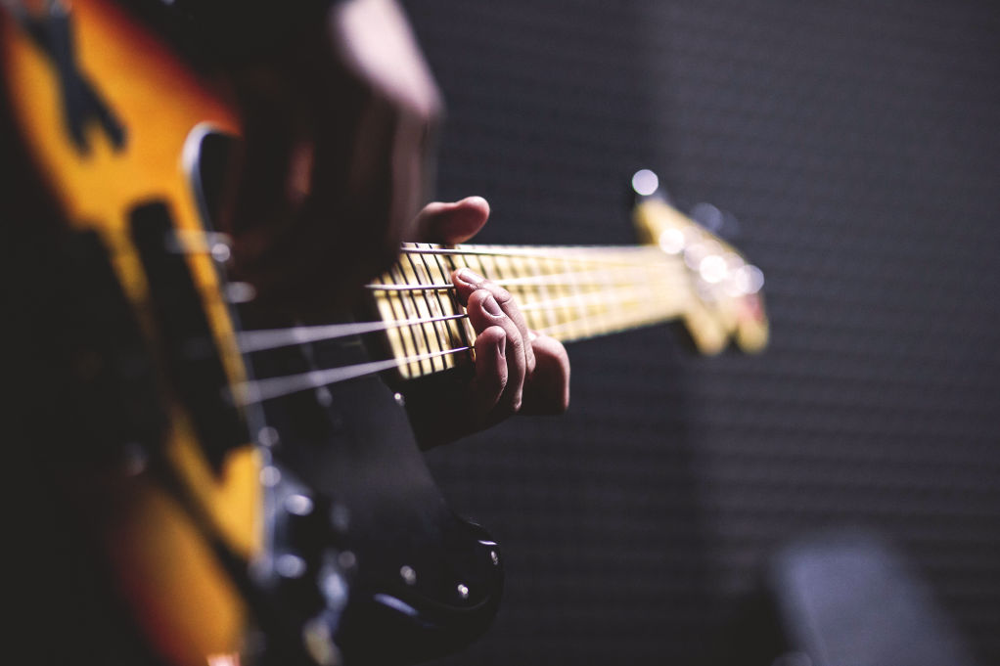

About the Brand
Engineered with ears, built with intent.
Dede Korkut Pedal began in 2014 with handmade analog pedals for local musicians, then evolved into DSP development without losing its player-first instincts.
The brand pairs electronics engineering with practical musical experience to make pedals that feel clear, useful, and special in real-world setups.